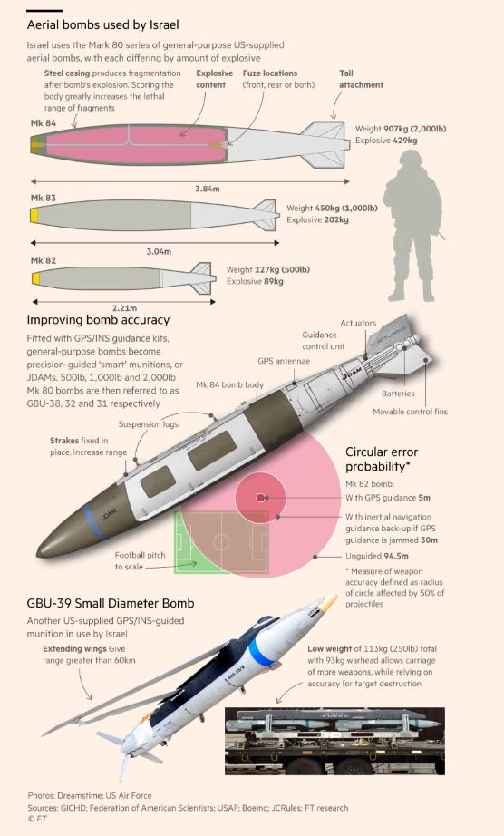

48 Israel
Schwartz
Israel’s huge defense related investment in software and sensor capacity created a vibrant Mark I-type tech sector. But Israelis doing that Mark I innovation typically sell their firms or technology to US Mark II type firms.
The relative absence of big domestic tech firms explains Israel’s deviation from the broader pattern of profit share being above GDP share
It also explains why so many Israelis—an estimated 100,000—simply migrate to Silicon Valley even though Israel’s so-called Silicon Wadi usually houses more start-up firms per capita than any other country. Both trends potentially inhibit a response to the AI and ML revolution in software.
Schwartz (2023) The Nokia Risk
48.1 Gaza War
AI - mass assassination factory
In one case discussed by the sources, the Israeli military command knowingly approved the killing of hundreds of Palestinian civilians in an attempt to assassinate a single top Hamas military commander. “The numbers increased from dozens of civilian deaths [permitted] as collateral damage as part of an attack on a senior official in previous operations, to hundreds of civilian deaths as collateral damage,” said one source.
“Nothing happens by accident,” said another source. “When a 3-year-old girl is killed in a home in Gaza, it’s because someone in the army decided it wasn’t a big deal for her to be killed — that it was a price worth paying in order to hit [another] target. We are not Hamas. These are not random rockets. Everything is intentional. We know exactly how much collateral damage there is in every home.”
Another reason for the large number of targets, and the extensive harm to civilian life in Gaza, is the widespread use of a system called “Habsora” (“The Gospel”), which is largely built on artificial intelligence and can “generate” targets almost automatically at a rate that far exceeds what was previously possible. This AI system, as described by a former intelligence officer, essentially facilitates a “mass assassination factory.”
The increasing use of AI-based systems like Habsora allows the army to carry out strikes on residential homes where a single Hamas member lives on a massive scale, even those who are junior Hamas operatives.
In the majority of cases, the sources added, military activity is not conducted from these targeted homes.
The goal was to “kill as many Hamas operatives as possible,” for which the criteria around harming Palestinian civilians were significantly relaxed. As such, there are “cases in which we shell based on a wide cellular pinpointing of where the target is, killing civilians. This is often done to save time, instead of doing a little more work to get a more accurate pinpointing.
The emphasis is on damage and not on accuracy.
The Israeli army estimates that it has killed between 1,000 and 3,000 armed Palestinian militants.
This deadly policy continues today — thanks in part to the use of destructive weaponry and sophisticated technology like Habsora, but also to a political and security establishment that has loosened the reins on Israel’s military machinery. Fifteen years after insisting that the army was taking pains to minimize civilian harm, Gallant, now Defense Minister, has clearly changed his tune. “We are fighting human animals and we act accordingly,” he said after October 7.
Abraham (2023) A mass assassination factory’: Inside Israel’s calculated bombing of Gaza
Tooze
Benjamin Netanyahu, at least in private, has been blunt about what Israel needs most to destroy Hamas: a steady supply of more US bombs. “We need three things from the US: munitions, munitions, and munitions,” the Israeli prime minister told a group of local government officials, according to a recording obtained by the Israel Hayom newspaper. “There are huge demonstrations in western capitals,” added Netanyahu, who is concerned political pressure overseas might threaten the US arms shipments. “We need to apply counter-pressure . . . There have been disagreements with the best of our friends.” Israel has expended vast amounts of ammunition in its war against Hamas in Gaza. The modern western weaponry used, from satellite-guided “bunker busting” bombs to pinpoint-accurate laser-guided missiles, have eroded Hamas’s military capabilities and, according to the Israel Defense Forces, killed more than 5,000 of the group’s estimated 30,000 fighters.

Citing estimates of damage to urban areas, military analysts say the destruction of northern Gaza in less than seven weeks has approached that caused by the years-long carpet-bombing of German cities during the second world war. “Dresden, Hamburg, Cologne — some of the world’s heaviest-ever bombings are remembered by their place names,” said Robert Pape, a US military historian and author of Bombing to Win, a landmark survey of 20th century bombing campaigns. “Gaza will also go down as a place name denoting one of history’s heaviest conventional bombing campaigns.”
Coppola
Israel’s actions are not only brutal beyond belief, but utterly stupid. It has played right into Hamas’s hands. All Hamas had to do was sit tight and watch the bodies pile high, knowing that eventually Netanyahu would have to choose between losing the war or committing genocide. Israel, for its part, is desperately begging the world to rescue it from having to commit a genocide by accepting the lesser crime of ethnic cleansing.
Coppola (2024) Looking back at 2023 - a personal view
48.1.1 South Africa ICJ accusation of genocide
South Africa (2023) Israels Genocide in Gaza to ICJ (pdf)
Mearsheimer
The 84-page “application” that South Africa filed with the International Court of Justice (ICJ) on 29 December 2023, accusing Israel of committing genocide against the Palestinians in Gaza. It maintains that Israel’s actions since the war began on 7 October 2023 “are intended to bring about the destruction of a substantial part of the Palestinian national, racial and ethnic … group in the Gaza Strip.” That charge fits clearly under the definition of genocide in the Geneva Convention, to which Israel is a signatory.
The application is a superb description of what Israel is doing in Gaza. It is comprehensive, well-written, well-argued, and thoroughly documented. The application has three main components.
First, it describes in detail the horrors that the IDF has inflicted on the Palestinians since 7 October 2023 and explains why much more death and destruction is in store for them.
Second, the application provides a substantial body of evidence showing that Israeli leaders have genocidal intent toward the Palestinians. (59-69) Indeed, the comments of Israeli leaders – all scrupulously documented – are shocking. One is reminded of how the Nazis talked about dealing with Jews when reading how Israelis in “positions of the highest responsibility” talk about dealing with the Palestinians. (59) In essence, the document argues that Israel’s actions in Gaza, combined with its leaders’ statements of intent, make it clear that Israeli policy is “calculated to bring about the physical destruction of Palestinians in Gaza.” (39)
Third, the document goes to considerable lengths to put the Gaza war in a broader historical context, making it clear that Israel has treated the Palestinians in Gaza like caged animals for many years. It quotes from numerous UN reports detailing Israel’s cruel treatment of the Palestinians. In short, the application makes clear that what the Israelis have done in Gaza since 7 October is a more extreme version of what they were doing well before 7 October.
There is no question that many of the facts described in the South African document have previously been reported in the media. What makes the application so important, however, is that it brings all those facts together in one place and provides an overarching and thoroughly supported description of the Israeli genocide. In other words, it provides the big picture while not neglecting the details.
Even though the South African application focuses on Israel, it has huge implications for the United States. The Biden administration is complicitous in Israel’s genocide.
48.1.2 US Intervention
Farooqi
The problem, of course, is the absolute primacy of political economy. Bill Ackman is only the ugly tip of the iceberg. What Walt and Mearsheimer called the Israel Lobby is just the institutional expression of the will of megadoners who dictate US Israel policy. No politician in DC has the balls to stand up to them, at risk of being primaried and politically destroyed. This means that there is no political room whatsoever for the United States to pressure Israel on any issue—much less end the special relationship.
The Gaza war is eroding America’s world position and undermining Biden’s reelection prospects. But Biden does not have the political capital to take on the megadonors who dictate US Israel policy. So what is the way out here?
Israel is an American protectorate in a dangerous region.
I have for a while been suggesting that the US should unilaterally interpose itself between the Israelis and Palestinians, and create a state for Palestine on its own authority.
Israeli Defense Minister Gallant has suggested, as part of his “day after” proposal, that a US-led international force should maintain order in Gaza. The US should support this course of action.
The US should intervene unilaterally and decisively. Simply put, we should take the Palestine problem off Israel’s hands. We should draw up a territorial map of the Palestinian state and impose it on the two parties.
The Israelis will require some persuasion. But even they are looking for a serious solution to the problem. If the US moves in decisively, the Israelis will play along. The Palestinians would finally be getting a state—they’d be stupid to contest the imposition.
The end goal would be create a viable state for the Palestinians. Palestine will remain a ward of the international community for some time. But over time, as the security situation stabilizes and the state is rebuilt, prosperity should return. We can give Palestine preferential access to Western markets and encourage foreign investment to help the process along. This is very much doable.
This course of action would guarantee Israeli security, solve the Palestine problem once and for all, and restore America’s authority on the world stage. It might even save Joe Biden’s reelection campaign.
Comments
Pxx
Pxx 19 hrs ago ·edited 19 hrs ago
“If the US moves in decisively, the Israelis will play along”
Interesting theory.
Really, what’s more likely in the proposed scenario? That US forces in what’s supposedly a sovereign Palestine chase the Israeli settlers out of the West Bank? Or would US forces become the enforcer for a resumption of the slow-motion ethnic cleansing that was already taking place?
There’s no fixing this. Best US can do (under the bipartisan “political reality” in Washington) is when Israel is done exterminating and/or expelling the Gazans, find a scapegoat for the domestic press. Probably Netanyahu personally. Then help bribe and/or threated the ICJ judges, to save the rest of the Israeli political establishment - who are all in on this in 9/11-hysteria style. Then USN can go back to doing FONOP’s in a part of the world that’s less hazardous to sail thru. Finally, hope the allies that stick with the US and Israel after all this (eg Brits, Germans) will pretend nothing actually happened. But even that’s optimistic.
Here’s the flipped take: “If Israel moves decisively, the US will play along” Meaning, for the US, having a proper war against Yemen and Lebanon
Thanks for having the integrity to discuss the issue, in any case. More than we can say about much of the “PMC” class nowadays
Feral Finster
The United States has lost any pretense of being an honest broker. Were it to intervene in Palestine this would be seen only as a more direct participation in Israel’s open ethnic cleansing, and, barring that, outright genocide.
Emanuel Francis
What record of successful American State-building in the M/E justifies your optimism about this plan’s viability? The Americans need to treat Israel like a normal country similar to, say, Eisenhower did during Suez Crisis. That must be the first priority.
Farooqi (2024) US Intervention in Palestine Must Be Decisive
48.1.3 Etnic Cleansing
Welsh
Historically, Israelis have been very good at ethnic cleansing: after all, almost everything in Palestine was Palestinian less than a hundred years ago, and now almost nothing is. This is the last gasp, the attempt to finish the job.
48.1.4 End game
Welsh
But Israel has systematically trained up its enemies. Hezbollah is their creation, it would not exist if they had not invaded and occupied Lebanon. Hamas was actively supported by them in order to undercut the PLA and fragment resistance.
Israel taught its enemies how to fight against overwhelming force; how to hide from assassinations and shrug them off when they inevitably happen; how to operate against air superiority and American style electronic intelligence.
Israel has been a US dependency for a long time, but right now, if it weren’t for the US, it would probably collapse economically and militarily.
This war an embarassment for the Israelis. It shows they can’t protect the settlers, they can’t win against Hamas and they can’t stop Hezbollah from striking settlements. It’s just embarassment all around. They want to widen the war and get Iran and the US into it, but they overestimate the US: the US can’t send ships into the Gulf and expect to leave. Most of its regional allies would be unwilling to let it run its airforce off their airfields, and the US can devastate Lebanon but it can’t stop Hezbollah from devastating Tel Aviv.
Israel’s on its way down. I don’t know how this mess will turn out, in the end, but US and Israeli weakness has been made clear. Neither are what they were. Add this to the humiliation of Ukraine and it’s clear the American century is all but over and that its allies are no longer safe.
As for a peace, if it’s negotiated, it’ll be done under Chinese auspices. Think about that a little.
48.1.5 Prospects
Freedman
Proposals tabled by Egypt just before Christmas envisaged three stages: an extendable two-week halt to the fighting which would see more hostages released in return for more Palestinian prisoners; an Egypt-sponsored ‘Palestinian national talk’ aimed at ending the division between the Fatah party (that dominates the PA) and Hamas, leading to the formation of a technocratic government in the West Bank and Gaza to oversee the reconstruction of the Strip and eventual Palestinian parliamentary and presidential elections; a comprehensive cease-fire, involving the release of all hostages in return for more prisoners, including some held for more serious terror offenses, Israeli withdrawal of its forces from Gaza and the return of those Gazans from the north to their homes.
Whether or not Israel could be convinced to engage with this plan, one might have thought that Hamas could be tempted. Indeed Ismail Haniyeh, Chairman of Hamas’s political bureau, based in Qatar, did show interest. He is aware that Hamas will struggle to stay in sole charge of the Strip, not least because they lack the funds and capacity for the massive reconstruction task ahead. To retain influence it would make sense to come together with Fatah, even though that could mean in effect recognising Israel and abandoning thoughts of its elimination.
But Hamas is also divided. Sinwar, the head of the military wing and de facto leader, has shown disdain for Haniyeh in the past (and did not inform him of what was planned for 7 October). He has rejected any new working arrangement with Fatah as ‘outrageous.’ He wants to be in charge of Gaza and, like Netanyahu, would prefer that all talk of Gaza’s future be put off until the fighting is over. As far as Sinwar is concerned the war is going fine and he will be content if it ends with Hamas still present and able to continue as before, whatever the wretched state of the territory. For now Hamas looks stronger than the ineffectual PA, daring to attack Israel and then getting prisoners released in return for hostages. In practice, if Hamas remains active but excluded, it can cause trouble for whoever tries to run Gaza, even if the Israelis have left.
If the US, Europeans, and Arabs really want to get a grip on this situation they are going to have to go beyond attempts to mediate between recalcitrant parties and engage more directly with the situation.
[Freedman (2024) Israel/Gaza: Retrospect and Prospect]
48.2 Zionism
48.2.1 Evilness
Coppola
“The settlers want to see the sea,” said Daniella Weiss, leader of a Zionist settler movement. “In order to see the sea, it is necessary that there are no homes. There will be no homes, there will be no Arabs. It’s just an elegant romantic way of saying I want to see the sea. How will you see the sea? There will be no homes, there will be no Arabs, look at the sea.”
I was shocked by the contrast between her bright eyes and pretty face, and the ugliness of her words. Evil was wearing the face of a middle-aged Jewish woman.
Figure: The Evil Face of Zionism
I have no doubt that what I saw in her face and heard in her words was pure evil. In that video she called for the violent clearing of the whole of Gaza, for no other reason than that Jewish settlers want the land. Over two million people live in Gaza, but she was not remotely concerned about their fate. For her, they were simply vermin to be eradicated. I cannot call the desire to displace or wipe out over two million people anything other than evil. I hope you can’t either.
Never in all my life had I thought evil could possibly appear in such a form.
48.3 Shimon Perez Peace Policy
Tooze
It is not without irony that it was precisely in the Middle East in the 1990s that the European example was taken up. This is how Ari Krampf summarizes Israeli peace politics in the 1990s:
The link between liberalized markets and a dovish perception of security issues was embodied in the political vision of Shimon Peres, the political figure who played a key role in the realization of the internationalist neoliberal vision. Peres, one of the patrons of the (1985Israel financial) Stabilization Plan, regarded the Plan as a central element in his geopolitical vision, encapsulated in the notion of the New Middle East (Peres, 1993; see also, Ben Porat, 2005a). One cannot avoid noticing that Peres was inspired by the process of European integration, where free markets had been endorsed as a regional pacifying mechanism: “Ultimately, the Middle East will unite in a common market—after we achieve peace. And the very existence of this common market will foster vital interests in maintaining the peace over the long term” (Peres, 1993, p. 99). Guy Ben Porat describes Peres’ book as a “blue- print for the future of the region based on economic rationality, peace, democracy, cooperation, mutual gain and general prosperity.” The Middle East, according to Peres’ vision, argues Ben Porat, needs to choose between “peace, global integra- tion and progress” and “continuing conflicts and backwardness” (Ben Porat, 2005a, p. 39). The link between economic and national security interests was also based on the interest of the Israeli private sector, which was expected to benefit from the realization of the New Middle East vision. It was also supported by the Israeli intellectual and professional elites (Keren, 1994). Economic cooperation and economic development of the Palestinian Authority were (supposed to be) an essential element in the New Middle East policy agenda. The internationalist neoliberal agenda was manifested in the “Paris Protocol” signed in April 1993 between Israel and the Palestinian Authority, which specified that “The two parties view the economic domain as one of the cornerstone in their mutual relations with a view to enhance their interest in the achievement of a just, lasting and comprehensive peace” (Gaza-Jericho Agreement, 1994).
As Krampf goes on to argue, this vision was derailed by the resistance of the Second Intifada, the rise of Hamas in Gaza and the lurch to the right in Israel. But regardless of events on the ground, Europe and the US clung to the Two State vision of the 1990s. The horror of October 7 consists in no small part in the fact that that vista has now been blown apart.